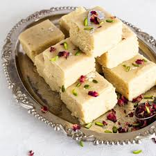

Gulab Jamun
Gradients
- sooji/rava
- oil
- water
- sugar
Recipe
- Combine sugar and water in a pan and bring to a boil to create the syrup. Remove from heat, add cardamom, and set aside to cool.
- In a mixing bowl, combine flour, paneer, sooji, Nestlé MILKMAID, baking powder, and baking soda. Mix gently to form a soft dough, avoiding over-kneading.
- Divide the dough into 30-35 portions and gently shape them into round balls.
- Heat oil on low flame and fry the balls until they turn golden brown.
- Transfer the fried Gulab Jamuns into the cooled sugar syrup. Once all the Gulab Jamuns are added, bring the syrup to a boil again briefly, then remove from heat.

Barfi
Gradients
- milk powder
- oil
- water
- sugar
Recipe
- firstly, in a bowl take 2½ cup milk powder, ¾ cup sugar and 1 cup milk.
- whisk and mix well until everything is well combined. transfer the mixture into large kadai. recommend using nonstick pan to prevent from sticking
- also add ¼ cup ghee and mix well on low flame. keep stirring on low flame until the mixture thickens.
- the mixture will hold the shape and starts to separate the pan after 10 minutes. do not overcook, as the burfi will turn hard. and if the mixture is undercooked then it turns chewy.
